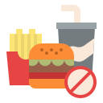

| Smoking |
Increases the risk of cancer, lung diseases, and heart disease. |
 |
| Excessive Alcohol Consumption |
Damages liver, increases risk of addiction and mental health issues. |
|
| Lack of Sleep |
Causes fatigue, poor concentration, and higher stress levels. |
|
| Procrastination |
Delays progress and increases stress. |
|
| Overeating Junk Food |
Leads to weight gain, fatigue, and poor health. |
|
| Negative Thinking |
Causes anxiety, stress, and depression. |
|
| Skipping Meals |
Leads to low energy, poor concentration, and weight gain. |
|
| Watching Too Much TV |
Reduces physical activity, harms posture, and wastes time. |
|
| Overuse of Social Media |
Decreases productivity, increases anxiety and loneliness. |
|
| Staying Up Late |
Causes sleep deprivation and affects productivity the next day. |
|
| Skipping Exercise |
Decreases fitness, energy levels, and increases health risks. |
|
| Ignoring Mental Health |
Can lead to burnout, anxiety, and depression. |
|
| Overworking |
Causes stress, exhaustion, and physical health issues. |
|
| Relying on Caffeine |
Leads to addiction, anxiety, and disrupted sleep. |
|